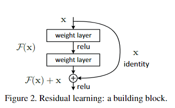
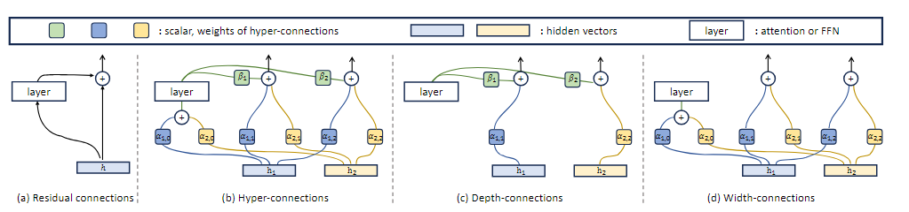
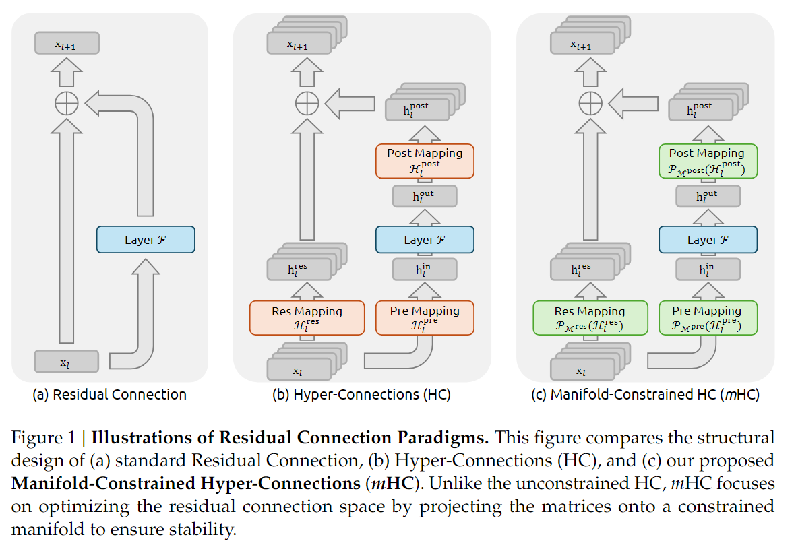

从 DNN 到 mHC
前一段时间 DeepSeek 发布了 mHC 架构，这边了解了一下，做一个阅读记录
想理解 mHC 就要先知道 HC(Hyper-Connections)；而想理解 HC，要先知道 Residuals(残差)；理解 Residuals，得先知道 DNN(深度神经元网络)，这些内容以后可能会单独写一些阅读记录，不过今天就速过一下
前置知识
DNN
这个内容在 ML 学习记录的神经网络章节中有简单提及。
核心就是通过多层神经元进行信息传递和转换，每个神经元接受来自前一层神经元的输入，应用权重和偏置，然后通过激活函数输出结果，这些结果作为下一层神经元的输入。
简单来说，DNN 由很多层构成，每一层都表示为一个函数，如下图所示

我们规定：
- 输入为 \(x\in\mathbb{R}^d\)；目标输出为 \(y\)；预期函数为 \(y=F(x)\)
- DNN 的目的是构造出来一个近似函数 \(\hat{y}=G(x;\mathcal{W})\)，其中 \(\mathcal{W}\) 为所有可学习的参数，\(G(\cdot)\) 由多层复合构成
令 \(x_l\) 表示第 \(l\) 层的中间表示（隐藏变量）；\(f_l\) 表示第 \(l\) 层的非线性映射；\(\mathcal{W}\) 表示第 \(l\) 层的参数。那么一个 \(L\) 层的 DNN 可以写为
但是 每一层都在试图重新构造 \(x_{l+1}=f_{l}(x_l)\)。这会导致效率低下，原因如下：
- 如果 \(f_l\) 没有学好，信息会被覆盖
- 深度增加的时候，梯度容易消失或者爆炸
- 每层都必须学习完整的变化
一个多层感知机本质上就是在做函数逼近。我们有输入 \(x\)，想要逼近一个复杂函数 \(F(x)\)。网络一层层叠加非线性变换，最后得到输出。不过层层叠加的过程中，特征会逐渐衰减，导致结果出现误差。
Note
A给B消息 \(x_A\)，B给C自己理解的消息 \(x_B\)，C给D自己理解的消息 \(x_C\)，依此类推，最终的结果相比 \(x_A\) 将出现误差
为了解决这些问题，引入了残差的思路
残差 (经典 ResNet 范式)
我们令 \(x_l\) 表示当前状态，\(F_l(x_l)\) 表示残差函数 (需要修正的量）；\(x_{l+1}\) 表示修正后的状态；\(H_{x+l}\) 表示从第 \(l\) 层输入到下一层输出的目标映射。
目标依然是 \(x_{l+1}\approx H(x_l)\)；但是我们不直接学习 \(H(x_l)\)，而是学习
那么我们可以得到
更标准一些的写法是
如下图所示

Note
A 给 B 消息 \(x_A\)，B 给 C 自己理解的消息 \(x_B\) 以及 A 给自己的消息 \(x_A\)；C 给 D 自己理解的消息 \(x_C\) 以及 B 给自己的消息 \(x_B\)；依此类推，每一层都将得到上一层理解的消息和上上层理解的消息
HC

图 b 就是 HC 结构，其目的是将残差流变宽。
不过个人觉得 DeepSeek 那篇论文中的 HC 更易懂一些（图 b）

传统的残差结构也就是 ResNet 范式中 只有一个 residual stream(单条跳线) 且 恒等映射是固定并同一的
HC 则提出了一种比残差连接更广义可学习的连接机制，核心动机为 让网络学习如何连接输入与输出，而不是单单加上恒等映射
详细的数学推导略过不谈，HC 将残差流的特征维度从 C 扩展到了 \(n\times C\),，让层与层之间由更加丰富的信息通道。公式扩展为
这里引入了三个可学习的矩阵
- \(\mathcal{H}_l^{res}\)：从宽残差流聚合信息输入到层
- \(\mathcal{H}_l^{post}\)：将层输入映射回宽残差流
- \(\mathcal{H}_l^{pre}\)：在残差流内部混合信息
Note
依旧消息传递的例子，不止越级传达消息，也传递更多消息类型。
A和B的聊天记录很有用，记为消息 \(x_A\)：里面包括了重要消息，朋友聊天，日常分享等内容
B把 “他和A的聊天记录” 转给C，记为消息 \(x_B\)，特别强调了重要消息，但是有意删除了朋友聊天、日常分享的内容
C把 ”他和B的聊天记录“ 转给D，记为消息 \(x_C\)，强调了C认为重要的消息，有意减少了认为不重要的内容
如果B觉得某消息非常重要，他甚至可以越级传给D
预期产生更加保证的信息传递，但是有一个问题：HC 会破环原本的恒等映射基础，当网络层数 L 变深的时候，信号经过多个 \(\mathcal{H}^{res}\) 连乘，会导致数值爆炸或者消失
mHC
mHC 的核心思路比较直观：它认为只要 HC 中 \(\mathcal{H}^{res}\) 最大特征值不恒为 1，就会在连乘过程中导致信号无边界的放大或衰减，进而导致大规模训练时的不稳定性。那么就把它限制在一个安全的流形上

网上很多在扯流型相关的内容，个人觉得其实没必要，况且 DS 也没给出来对应的模型，简单做下介绍。
回归思路：限制在一个安全的流型上，我们简单思考，其实有不少选择：
- \(\mathcal{H}^{res}\) 的奇异值（矩阵的放大倍率和缩小倍率）直接除，但这样的话就会导致某一条流特别强，其它流变的很弱，自然不合适
- 做一个 SVD（奇异值分解，将任意一个矩阵分解为三个结构明确的矩阵的乘积），将奇异值都变为 1。看起来没什么问题，但是在大量的数据处理下，会变得很慢，同样不太合适
- 双随机矩阵（每一行加起来等于 1，每一列加起来也等于 1，所有元素大于等于 0）：用 Sinkhorn 算法把原矩阵投影到双随机矩阵空间
Sinkhorn 算法其实就是交替归一化，把一个矩阵先行归一化，再列归一化，交替计算，直到完成
例如
\[ K= \begin{pmatrix} 1 & 2\\ 3 & 4 \end{pmatrix} \]先行归一化
\[ K^{(1/2)}= \begin{pmatrix} \frac{1}{3} & \frac{2}{3}\\ \frac{3}{7} & \frac{4}{7} \end{pmatrix} \]再列归一化
\[ K^{(1)}= \begin{pmatrix} \frac{1}{3}\cdot\frac{21}{16} & \frac{2}{3}\cdot\frac{21}{26}\\ \frac{3}{7}\cdot\frac{21}{16} & \frac{4}{7}\cdot\frac{21}{26} \end{pmatrix} = \begin{pmatrix} \frac{7}{16} & \frac{7}{13}\\ \frac{9}{16} & \frac{6}{13} \end{pmatrix} \approx \begin{pmatrix} 0.4375 & 0.53846\\ 0.5625 & 0.46154 \end{pmatrix} \]这是第一轮的结果，列因为刚做完归一化所以为 1，接下来对行再做归一化，依此类推
Sinkhorn 代码
def sinkhorn_knopp(K, max_iters=1000, tol=1e-9, return_scalings=False):
K = np.array(K, dtype=np.float64)
if K.ndim != 2 or K.shape[0] != K.shape[1]:
raise ValueError("K must be a square 2D array.")
if np.any(K < 0):
raise ValueError("K must be nonnegative.")
n = K.shape[0]
if np.all(K == 0):
raise ValueError("K is all zeros; cannot scale to doubly-stochastic.")
eps = 1e-16
r = np.ones(n, dtype=np.float64)
c = np.ones(n, dtype=np.float64)
for _ in range(max_iters):
# r <- 1 / (K c)
Kc = K @ c
r = 1.0 / np.maximum(Kc, eps)
# c <- 1 / (K^T r)
Ktr = K.T @ r
c = 1.0 / np.maximum(Ktr, eps)
P = (r[:, None] * K) * c[None, :]
row_err = np.max(np.abs(P.sum(axis=1) - 1.0))
col_err = np.max(np.abs(P.sum(axis=0) - 1.0))
if max(row_err, col_err) < tol:
break
P = (r[:, None] * K) * c[None, :]
if return_scalings:
return P, r, c
return P
然后就是个包装过程了
-
双随机矩阵 \(\rightarrow\) Birkhoff Polytope；
-
谱范数约束 \(\rightarrow\) 流型约束；
-
交替投影算法 \(\rightarrow\) Sinkhorn 算法
以上。
其实论文还挺好的，但也没想象那么神，自媒体学新闻学的
参考
参考文献